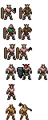
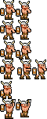
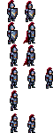
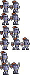

Era 3 (Genesis) players: pixellab (old) against tools/spritegen.mjs (new). Rows: idle, up, down, swing, miss, win
left, the player: the barbarian
OLD pixellab, game scale
NEW spritegen, game scale
OLD, 4x
NEW, 4x
right, the computer: the knight (the rig mirrors him)
OLD pixellab, game scale
NEW spritegen, game scale
OLD, 4x
NEW, 4x
left, the player: the barbarian: old era3-p1 -- faults 1, 46 colours, 11 of 12 frames different
left, the player: the barbarian: new era3-barbarian -- faults 0, 14 colours, 12 of 12 frames different
right, the computer: the knight (the rig mirrors him): old era3-p2 -- faults 1, 41 colours, 11 of 12 frames different
right, the computer: the knight (the rig mirrors him): new era3-knight -- faults 0, 10 colours, 12 of 12 frames different